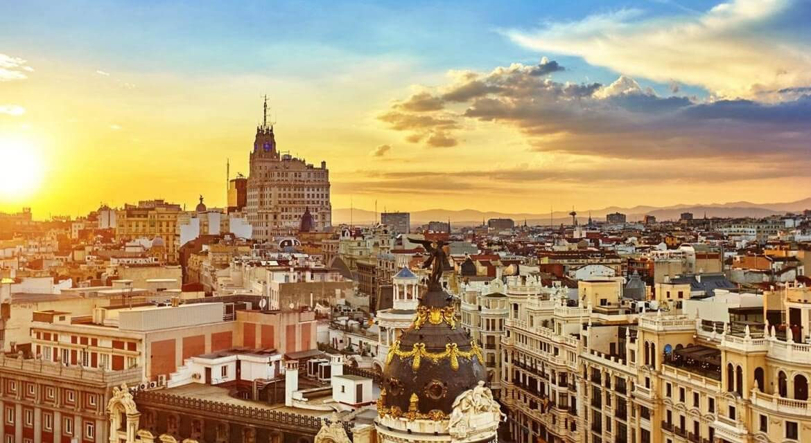

História da Espanha
O território espanhol foi habitado desde tempos remotos por populações diversas, como mouros, árabes e romanos, que estavam distribuídas em vários reinos. A unificação da Espanha ocorreu somente por meio de acordos políticos e econômicos que permearam as monarquias da região. Houve ainda o forte papel da Igreja, uma vez que o país foi unificado após a adoção do catolicismo como religião oficial.
A partir da unificação, a Espanha tornou-se uma das principais potências mundias, especialmente devido ao seu protagonismo durante as Grandes Navegações. Detinha grandes porções de terra que foram colonizadas, principalmente na América, com destaque para a maior parte dos países latino-americanos. Questões internas e levantes externos levaram-na à decadência econômica e, por consequência, à perda de suas colônias.
No último século, a Espanha passou por uma importante transformação política, já que foi governada por quase 40 anos por uma ditadura. O reestabelecimento da democracia no país deu-se pela monarquia espanhola, que retomou o poder após os anos sombrios. Logo a Espanha recuperou-se política e economicamente, tornando-se um dos países mais desenvolvidos do mundo.